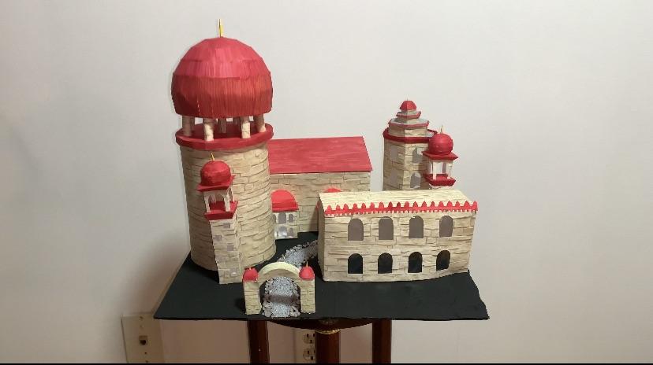

ABOUT
Introduction

Hi, my name is Trisha, and I created this website to help others get into papercrafts!
These are some of my own creations I made using the process on this website.

Hi, my name is Trisha, and I created this website to help others get into papercrafts!
These are some of my own creations I made using the process on this website.
When I was little, my cousin and I discovered Canon Creative Park, a website with hundreds of printable papercraft templates. We spent hours building these projects together—it sparked my love for papercrafts!
In high school, I was asked to create a personal project for my final year. I decided to design my own papercraft template, inspired by Creative Park. That’s how I discovered the tools and techniques featured on this website!